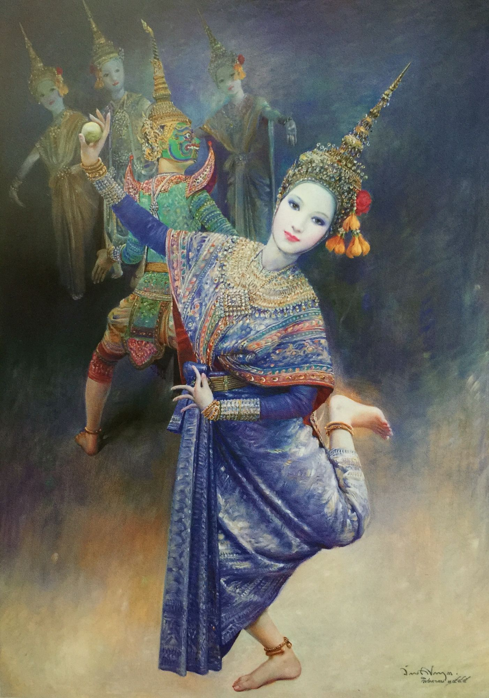
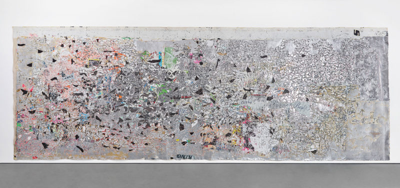
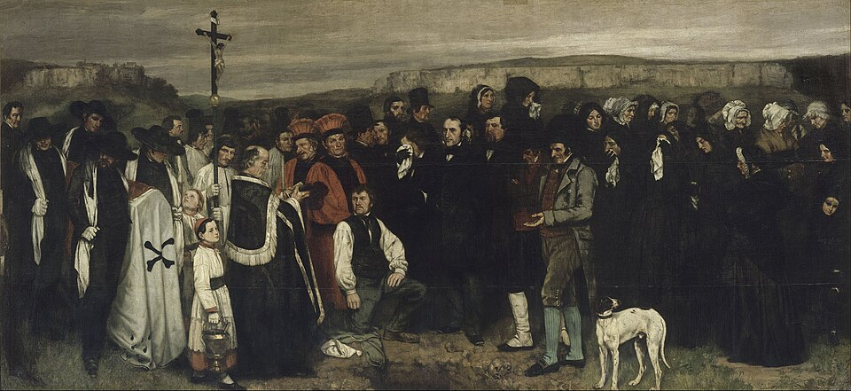

Guernica
Guernica

The dance of Mekhala and Ramasura
 Embracing
Embracing
 I and the Village
I and the Village
 The Scream
The Scream
 Composition VIII
Composition VIII

Helter Skelter I

A Burial at Ornans
 The Starry Night
The Starry Night